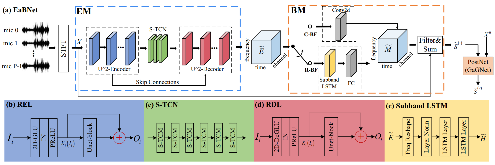
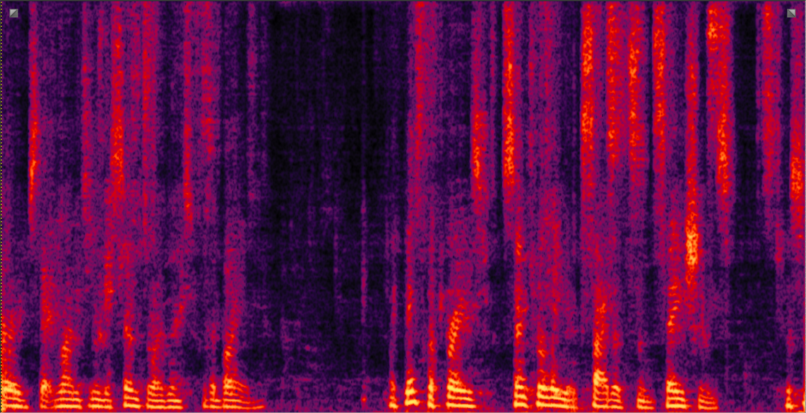
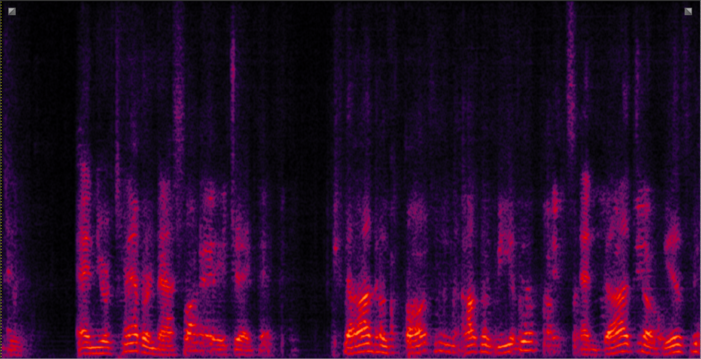
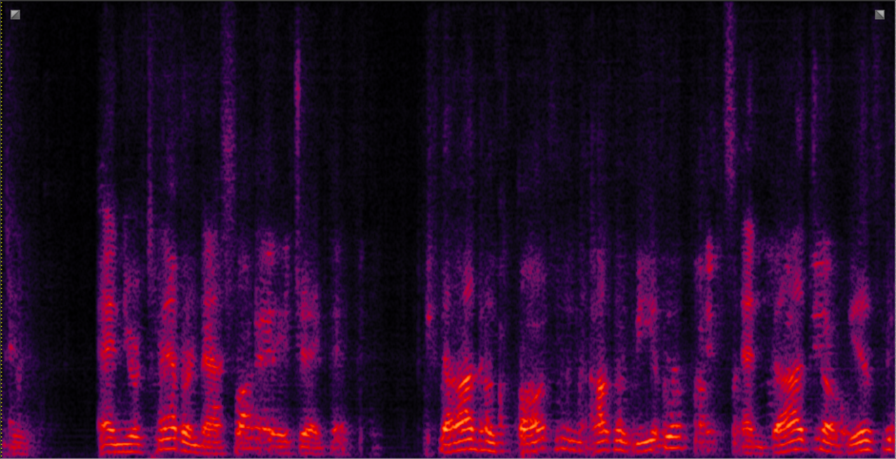
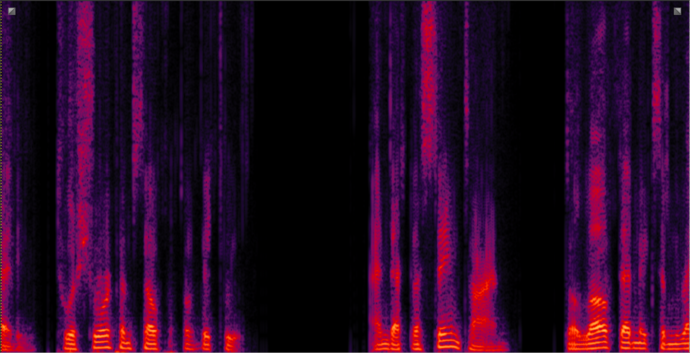

EMBEDDING AND BEAMFORMING: ALL-NEURAL CAUSAL BEAMFORMER FOR MULTICHANNEL SPEECH ENHANCEMENT
Andong Li, Wenzhe Liu, Chengshi Zheng, Xiaodong Li
Abstract: Standing upon the intersection of traditional beamformers and deep
neural networks, we propose a causal neural beamformer paradigm
called Embedding and Beamforming, and two core modules are designed accordingly, namely EM and BM. For EM, instead of estimating spatial covariance matrix explicitly, a 3-D embedding tensor is
learned with the network, where both spatial-spectral-temporal discriminative information can be represented. For BM, a network is
directly leveraged to derive the beamforming weights so as to implement filter-and-sum operation. To further improve the speech quality, a post-processing module is introduced to further suppress the
residual noise. Based on the DNS-Challenge dataset, we conduct
the experiments for multichannel speech enhancement and the results show that the proposed system outperforms previous advanced
baselines by a large margin in multiple evaluation metrics.
EaBNet Architecture:

Samples:
Noisy
CTSNet
GaGNet
FasNet+TAC
MC-ConvTasNet
MIMO-UNet
MB-MVDR(oracle)
EaBNet(Pro.)
EaBNet+PostNet(Pro.)
Utterance 1 (SNR=-5dB, target-doa=15°, inter-doa=30°)
Utterance 2 (SNR=-2dB, tar-doa=10°, inter-doa=110°)
Utterance 3 (SNR=0dB, tar-doa=30°, inter-doa=85°)

|
|
 |
|
|
  
|
|
|
|
|

|
|
 |
|
|
Experimental Results: